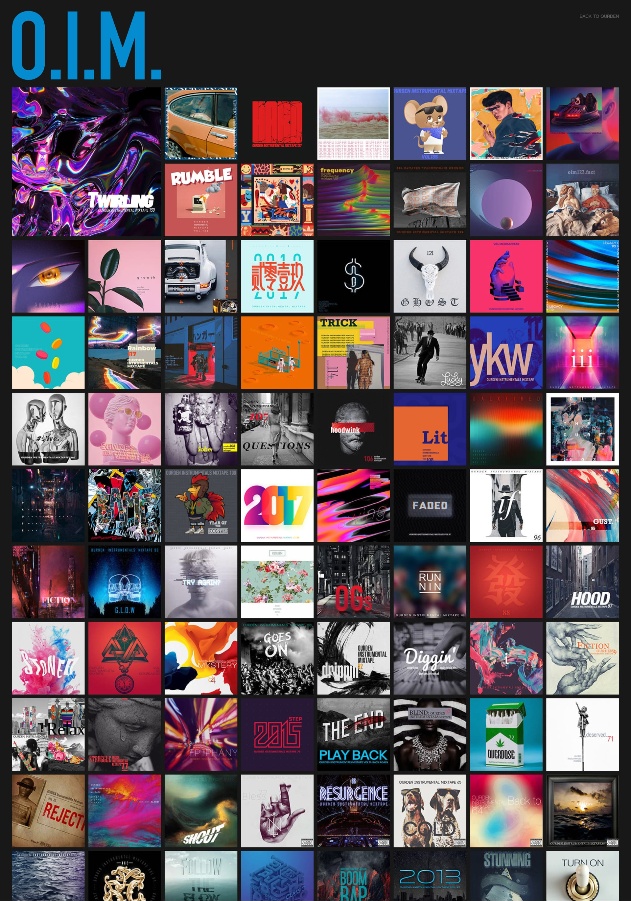
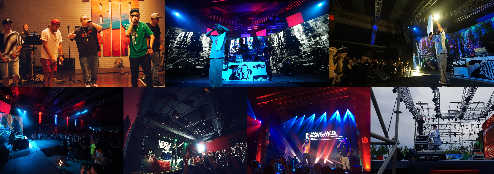
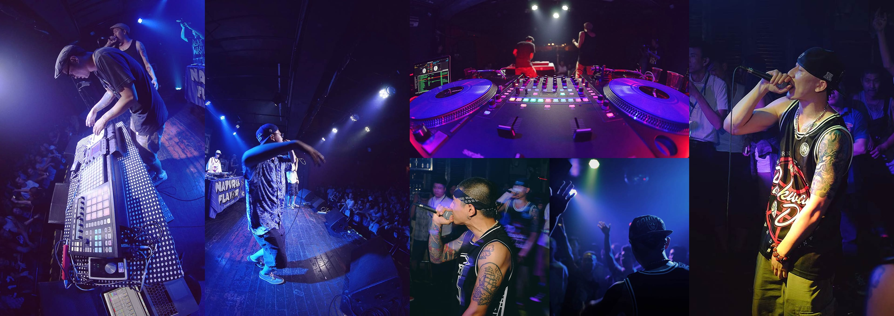
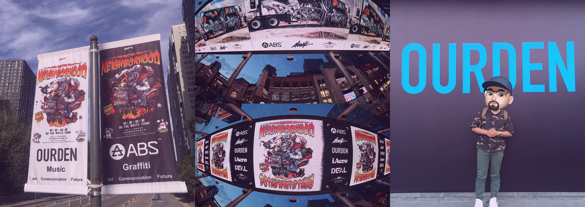
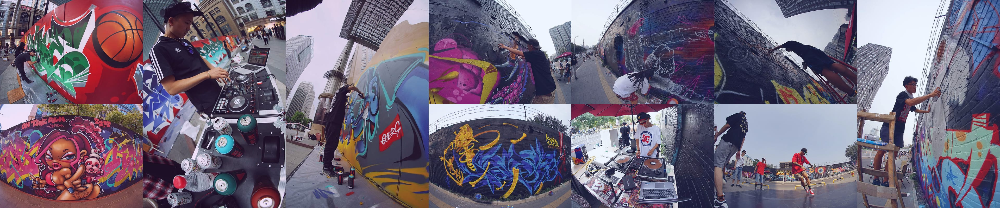
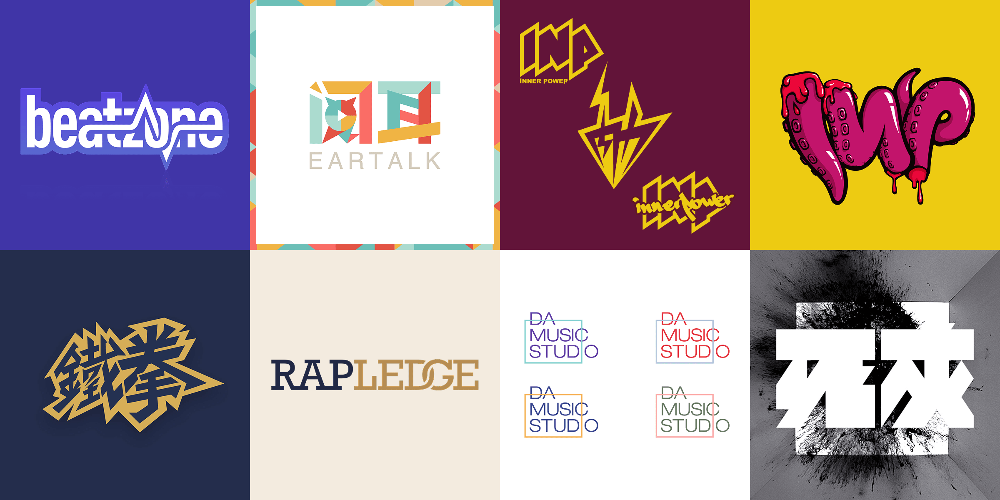

Loading...
Loading...
"Nothing beats the music you grew up with"
Role: Founder & Creative Director
OURDEN was a pioneering online community dedicated to hip-hop culture in China, which I founded during my university years. Initially launched as a BBS forum between 2007 and 2013, it served as a niche platform where enthusiasts could share music, discuss artist stories, and explore the creative process of making hip-hop music. At a time when hip-hop was still a very niche interest in China, OURDEN quickly attracted a passionate user base, fostering a vibrant exchange of ideas and cultivating a strong community spirit.
With the rise of mobile internet and platforms like Weibo, OURDEN gradually transitioned from a traditional BBS to a more media-driven platform. We produced a large amount of original content, including music reviews, in-depth analyses of American hip-hop culture, and artist features, aiming to introduce and popularize this genre to a broader audience in China. This evolution helped OURDEN grow to over 400,000 followers on Weibo. The website eventually developed fixed content sections such as music sharing, artist profiles and stories, as well as detailed lyric translations and interpretations.
Embracing the WeChat era, OURDEN began creating content on WeChat as well. Several of our articles achieved over 100,000 reads, gaining wide recognition and influence. We had nearly 100 active contributors who collectively translated and analyzed hundreds of song lyrics. These efforts deeply inspired many young Chinese rappers, encouraging them to further explore and embrace hip-hop culture.
Commercial Collaborations and Local Support
As a hip-hop media platform, OURDEN also started shifting focus from purely American hip-hop to supporting the local Chinese scene, exploring opportunities for commercialization. We collaborated with brands such as Le Music, Vans, Nike, and Beats, providing support in event planning, filming, artist interviews, and promotional campaigns. At the same time, we actively supported local underground rappers, helping them organize and promote performances and community activities.
In 2016, OURDEN collaborated with the renowned Chinese graffiti artist collective 400ml to host the street culture festival "邻里相聚 Meeting the Neighborhood."
The event brought together elements like breakdancing, freestyle rap, graffiti art, DJ performances, sneaker exhibitions, and tattoo artistry. During the festival, OURDEN's in-house music producers filmed a new music video, capturing the energetic and creative atmosphere of the community.
At its peak, OURDEN expanded into multiple sub-brands, including 阅耳 EarTalk, a website focused on music criticism; Beatzone, a platform for sharing and discussing rap instrumentals; and 内力 InnerPower, a streetwear brand inspired by hip-hop culture. We also created numerous album covers and brand designs for artists and industry partners, further establishing OURDEN's position as a cultural icon within China's hip-hop scene.
Looking back, OURDEN emerged during a golden era when internet interest communities were thriving, and hip-hop culture in China had not yet been heavily commercialized or overly entertainment-driven. It was a time of genuine passion and pure resonance among true enthusiasts. OURDEN became a space where we shared music and stories purely out of love for the culture, without excessive compromise or commercial pressure. While OURDEN was still young and inexperienced in commercial development, we intentionally prioritized authenticity over profit. Many of our content team members were still students back then, and they have all gone on to build remarkable careers in different fields. I feel truly grateful and proud that we shared such a heartfelt journey together, united by a deep love for hip-hop.